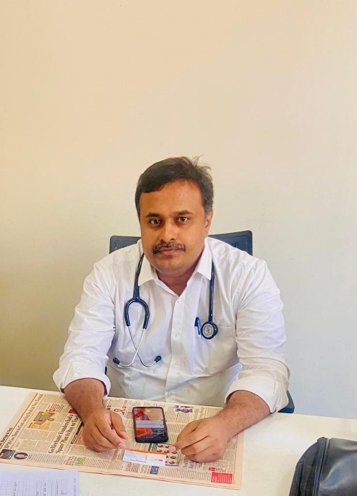
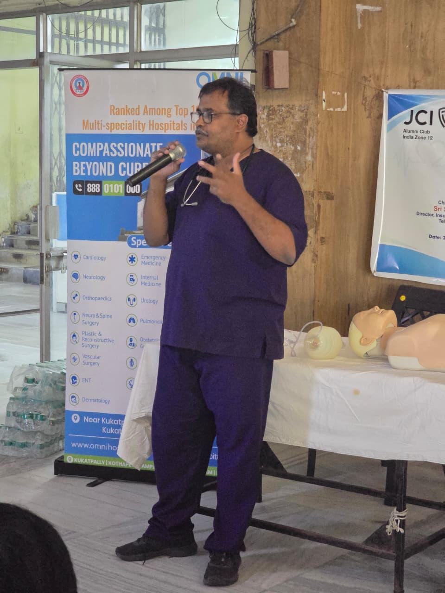
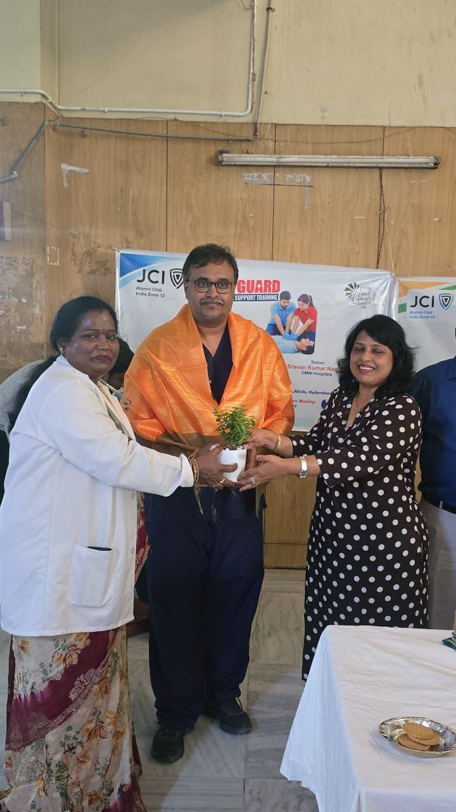
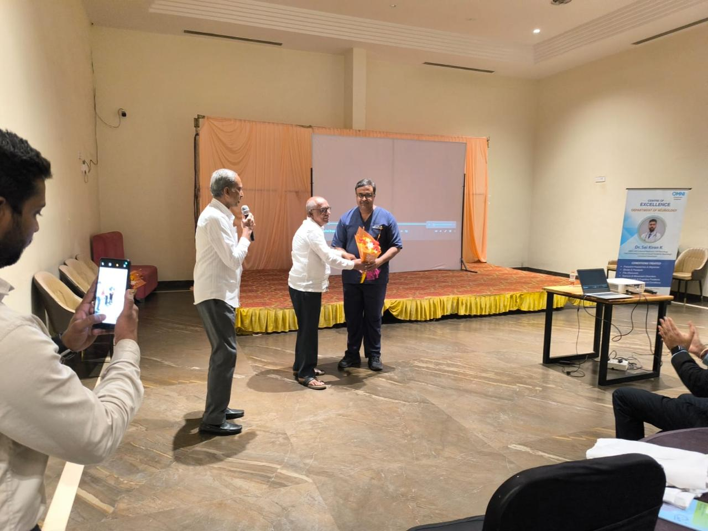
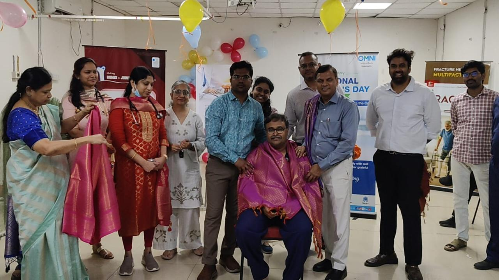

Current Leadership Role
Medical Superintendent / Medical Head
OMNI Hospitals, Kukatpally
May 2017 — Present
Senior hospital leadership role alongside clinical responsibilities in critical care and general medicine.
Dr. Srihari
Clinical expertise in critical care combined with healthcare leadership and administration.
Contact
Professional Profile
Dr. Srihari, MNAMS, is a Consultant in Critical Care and Medical Superintendent / Medical Head, with extensive clinical experience in Intensive Care and Critical Care.
Currently serving as Medical Superintendent / Medical Head and Consultant Critical Care at OMNI Hospitals, Kukatpally, with previous experience as Senior Registrar – MICU.1 at KIMS, Secunderabad.
The professional profile combines clinical expertise, critical care experience, and hospital leadership, with a focus on quality patient care and effective healthcare delivery.
Professional Experience & Leadership
Senior leadership, critical care, and ICU experience across concurrent and previous appointments.
Current Leadership Role
OMNI Hospitals, Kukatpally
May 2017 — Present
Senior hospital leadership role alongside clinical responsibilities in critical care and general medicine.
Current Clinical Role
OMNI Hospitals, Kukatpally
May 2017 — Present
Concurrent clinical role in critical care alongside general medicine and hospital leadership.
Previous Experience
Krishna Institute of Medical Sciences (KIMS), Secunderabad, Telangana, India
October 2016 — October 2022
Medical Officer — ICU
Nandyal, Andhra Pradesh, India
01 January 2004 — 31 October 2010
Medical Officer — ICU
Kurnool, Andhra Pradesh, India
01 November 2009 — 31 October 2010
Medical Officer — ICU
Kurnool, Andhra Pradesh, India
01 November 2010 — 31 October 2011
Areas of Expertise
Clinical focus shaped by patient-centred care, careful evaluation, and clear communication.
Management of serious and life-threatening conditions, with attention to timely assessment and coordinated care.
Clinical experience in intensive care settings requiring close observation, ongoing monitoring, and treatment.
Prompt evaluation and management of acute medical and surgical emergencies through a systematic approach.
Informed discussions around organ donation with sensitivity, clarity, and respect for patients and families.
Clinical & Administrative Skills
Structured expertise across family medicine, acute care, intensive care, and clinical procedures.
Publications & Journals
Selected publications, case reports, and scholarly contributions.
India Patent Application Publication · Patent Office Journal No. 31/2022
Patent application title.
World Health Organization (WHO)
Case Report in IJCMR
PubMed · Publications and book contributions
Cureus
Education & Training
Academic qualifications, postgraduate training, and fellowship education.
1998 — 2003
The International Medical College & Technological University, Tanzania
2013 — 2016
Swatantra Multispecialty Hospital, Rajahmundry, Andhra Pradesh
2017 — 2019
Diploma in Diabetes Management (2017), Fellowship in Critical Care Medicine (2018), Fellowship in Pediatrics (2019), and Master Class in Medical Emergencies (2019) — MEDVARSITY
2020
MEDVARSITY
2021
Jaipur National University
Achievements & Recognitions
Selected credentials and recognitions from the professional record.
Professional Recognition
MNAMS, Ministry of Health & Family Welfare, India · 2022
Certification
MEDVARSITY · 2018
Certification
MEDVARSITY · 2020
Certification
MEDVARSITY · 2017
Talks & Presentations
Verified talk and presentation records can be added to this section as they become available.




Professional Gallery
Additional verified professional photographs can be added to this gallery.
Contact
For professional enquiries, please use the details below.